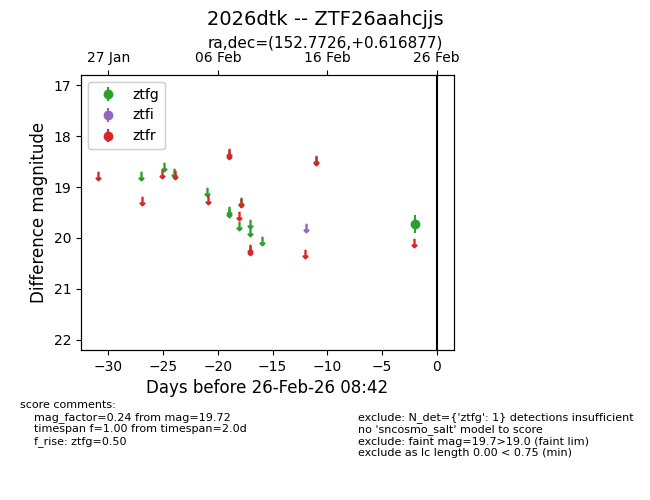
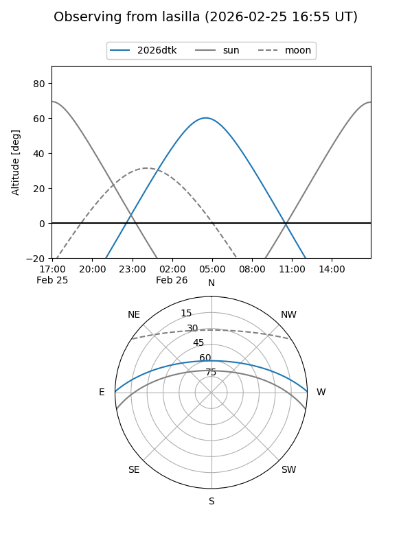
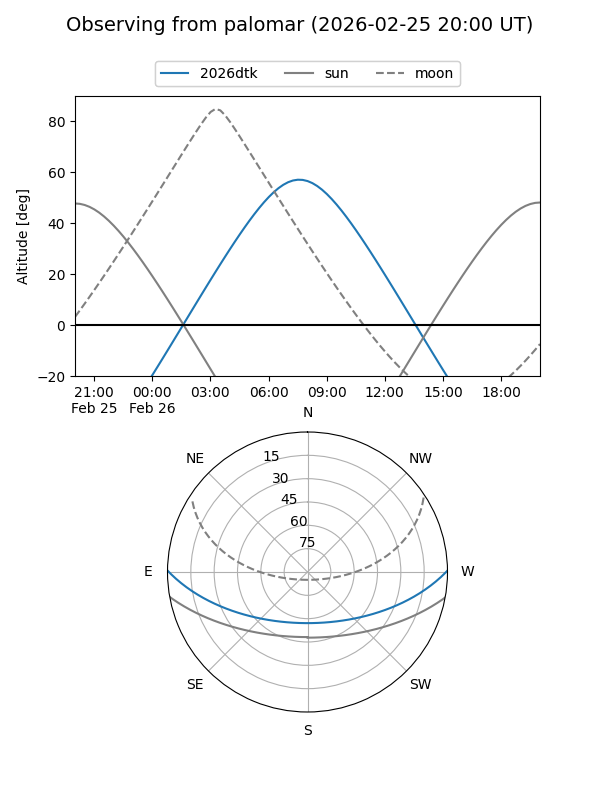

2026dtk
Target 2026dtk at 2026-02-26 08:43
Aliases and brokers:
FINK: link
Lasair: link
ALeRCE: link
TNS: link
YSE: link
alt names
ZTF26aahcjjs (ztf,fink_ztf)
2026dtk (tns,yse)
Coordinates:
equatorial (ra, dec) = 152.7726,+0.61688
equatorial (HMS+DMS) = 10:11:05.43,+00:37:00.76
galactic (l, b) = (240.7153,+43.29636)
Flags:
Photometry:
last ztfg=19.72
1 ztfg detections
Lightcurve

Visibility


Additional plots